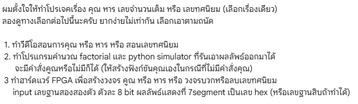
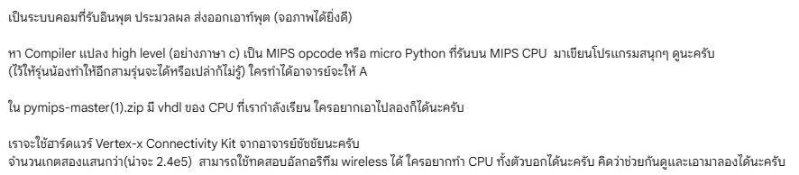

QUEST 01 // PROFESSOR'S BRIEF → VIRTUAL BOARD SIMULATOR
ORIGIN QUEST
จากโจทย์ของอาจารย์ สู่เครื่องมือที่เราสร้างขึ้นมาเชื่อมระบบ
QUEST 01 // SIMULATOR
FPGA STUDIO v4.4
อาจารย์บอกแบบนี้
POST 01 // SIMULATOR BRIEF

โจทย์ทางเลือก เขียนโปรแกรมคำนวณ + รันบน Simulator
VIRTUAL SIM
อาจารย์ท้าไว้แบบนี้
POST 02 // GRADE A QUEST

“อีก 3 รุ่นจะทำได้ไหมไม่รู้ ใครทำได้ให้ A!”
GRADE A CHALLENGE
อาจารย์บอก: “ทำโปรแกรมคำนวณ และ Python Simulator ที่รันเอาผลลัพธ์ออกมาได้”
→ ผมเลยทำ Virtual Board Sim
จำลองบอร์ด Nexys A7 ทั้งใบ กดสวิตช์ 16 ขา ดูไฟ 7-Segment สดๆ บนจอ ไม่ต้องง้อบอร์ดจริง
16 SWITCHES & LEDS
7-SEG DEC / HEX
LIVE 32-REG DEBUG
อาจารย์บอก: “เป็นระบบคอมที่รับอินพุต ประมวลผล ส่งออกเอาท์พุต (จอภาพได้ยิ่งดี)”
→ ผมเลยทำระบบผูกขา CPU เข้ากับ I/O และจอ VGA อัตโนมัติ
เปลี่ยน CPU เปล่าๆ ให้เป็นระบบคอมครบวงจร รับค่าสวิตช์/ปุ่มกด ประมวลผล แล้วส่งออก LED, 7-Seg และจอ VGA
อาจารย์ท้า: “หา Compiler แปลงภาษา C เป็น MIPS opcode มาเขียนโปรแกรมสนุกๆ (ใครทำได้ให้ A)”
→ ผมเลยเชื่อม GCC เข้า IDE + ทำระบบนำเข้า Custom Compiler
จับคอมไพเลอร์ C มาผูกกับ
start.S และ link.ld กดปุ่มเดียวแปลงโค้ด C เป็นคำสั่ง MIPS พร้อมรันทันที